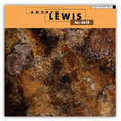

Duration: 17 min
Format: fixed medium sound (8-channel) with video
Premiere: 28 October 2012, Manchester, England (UK) 
MANTIS Fall Festival 2012
Cosmo Rodewald Hall, Manchester University
Recording (audio only, stereo): Andrew Lewis 'Au-delà', audio CD, empreintes DIGITALes, IMED 13125, 2013
Video download (stereo): Vimeo | YouTube
Website: LEXICON project website
Programme note: (download as PDF)
LEXICON is based on a poem written by a 12-year old boy, Tom, in which he tries to articulate his personal experience of dyslexia. By presenting an imaginary sonic and visual journey through the text of the poem, LEXICON explores not only the challenges, but also the life-affirming creative potential that dyslexia, and a fuller understanding of it, can bring.
As part of the creative process the composer has worked with a team of dyslexia experts from the Miles Dyslexia Centre at Bangor University, which has enabled the composition of the piece to draw inspiration from recent research in the field. In particular it makes use of growing body of evidence that suggests that, for many people with dyslexia, a deficit in phonological processing (accessing and analysing speech sounds, and also linking them to letters) is more significant than that in visual or attentional processing on their own. This contradicts the popular but less well supported notion that dyslexia is primarily about difficulties in seeing letters and words on the page. Accordingly, LEXICON is a work conceived primarily with sound as its raw material, with the visual aspect conveying a metaphorical rather than scientific view of the experience of dyslexia.
LEXICON was supported by the Wellcome Trust's 'Engaging Science' programme, which aims to use artistic creation as a means of raising public awareness of biodmedical science. It was composed in the Electroacoustic Music Studios at Bangor University, with additional material developed at CMMAS, Mexico and the composer's studio.
Sound and video: Andrew Lewis
Science Team: Dr Markéta Caravolas (Director, Miles Dyslexia Centre, Bangor University)
Meg Browning Ann Cooke
Text: Tom Barbor-Might
Readers: James Bowers, Michael O'Boyle,Tom Barbor-Might, Esme Lewis,
Martha Lewis, Jenny Mainwaring, Damien Vadgama